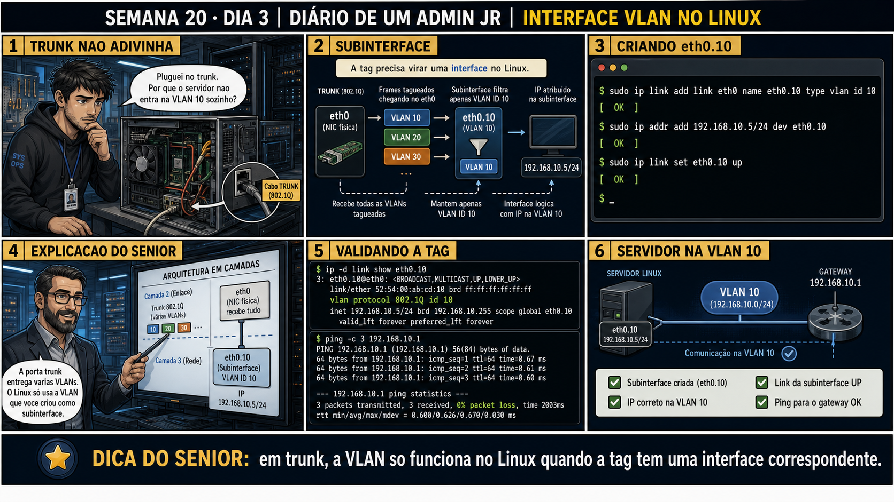

Semana 20 · Dia 3 | Nível Júnior — Redes
VLAN numa Interface Linux
uma placa de rede física, várias identidades lógicas — cada uma numa VLAN diferente
ANTES DE ALTERAR, OBSERVE. DEPOIS DE ALTERAR, VALIDE.
1. O chamado
Chamado #2003: "O servidor está ligado numa porta trunk do switch, carregando VLAN 10 e
VLAN 20 — mas o Linux só enxerga uma interface eth0 normal, sem separação nenhuma entre as duas VLANs." O
Linux precisa de uma
subinterface VLAN
pra cada VLAN que ele precisa participar — a interface física sozinha não faz essa separação automaticamente.
💡 Passa o mouse nas palavras destacadas pra ver uma dica rápida — clica se quiser a explicação completa com analogia.
2. Antes de ver as opções — tenta responder
🧠 Recall ativo: por que criar uma subinterface como eth0.10 é diferente de simplesmente atribuir
um IP direto na interface física eth0?
Atribuir um IP direto em eth0 trataria TODO o tráfego daquela interface como se fosse de uma única rede,
sem distinguir VLANs. A subinterface eth0.10 diz explicitamente ao kernel: "todo tráfego que passa por
aqui deve levar (ou ser interpretado com) a tag 802.1Q da VLAN 10". Assim, eth0.10 e eth0.20 podem
coexistir na mesma placa física, cada uma com seu próprio IP, cada uma isolada na sua VLAN — exatamente
como duas portas access diferentes num switch, só que dentro do mesmo servidor.
3. Questão comentada — clica numa alternativa
O servidor tem uma única placa física eth0, ligada numa porta trunk permitindo
VLAN 10 e VLAN 20. Você precisa que o servidor tenha um IP em cada uma dessas VLANs. Qual é o procedimento
correto?
💡 Analogia do Sênior para Fixar: O princípio fundamental de 03 VLAN INTERFACE LINUX é como o alicerce de sustentação de um viaduto: garante que a estrutura de comunicação suporte alto tráfego sem colapsar.
4. Decodificador de conceitos
Clica em qualquer termo pra ver a definição completa e uma analogia do dia a dia:
5. Ferramentas e leitura da evidência
| Comando | O que faz |
|---|---|
ip link add link eth0 name eth0.10 type vlan id 10 | Cria a subinterface VLAN 10 sobre eth0. |
ip addr add 10.10.10.5/24 dev eth0.10 | Atribui um IP à subinterface. |
ip link set eth0.10 up | Ativa a subinterface. |
$ sudo ip link add link eth0 name eth0.10 type vlan id 10 $ sudo ip addr add 10.10.10.5/24 dev eth0.10 $ sudo ip link set eth0.10 up $ sudo ip link add link eth0 name eth0.20 type vlan id 20 $ sudo ip addr add 10.20.20.5/24 dev eth0.20 $ sudo ip link set eth0.20 up $ ip -br a eth0 UP eth0.10 UP 10.10.10.5/24 eth0.20 UP 10.20.20.5/24 $ ping -c 2 -I eth0.10 10.10.10.100 2 packets transmitted, 2 received, 0% packet loss $ ping -c 2 -I eth0.20 10.20.20.200 2 packets transmitted, 2 received, 0% packet loss
5.1 O painel 4 da prancha de hoje mostra o técnico esquecendo de configurar a porta do switch como trunk, mesmo já tendo criado as subinterfaces certas no Linux
Um colega cria eth0.10 e eth0.20 corretamente no servidor, mas a porta do switch onde o servidor está ligado continua configurada como access.
Por que as subinterfaces corretas no Linux não são suficientes sozinhas, se a
porta do switch ainda estiver como access?
💡 Analogia do Sênior para Fixar: Diagnosticar anomalias em 03 VLAN INTERFACE LINUX é como o eletricista usando o multímetro no quadro de disjuntores: mede a passagem de sinal no ponto exato da falha.
5.2 "A interface eth0 física precisa ter IP próprio também?"
Um colega não sabe se deve deixar a interface eth0 física sem IP nenhum, já que só as subinterfaces eth0.10 e eth0.20 estão sendo usadas.
Por que é normal e esperado que a interface física eth0 fique sem IP configurado
diretamente, quando todo o tráfego é organizado por VLANs em subinterfaces?
💡 Analogia do Sênior para Fixar: Aplicar as boas práticas de 03 VLAN INTERFACE LINUX é como o protocolo de segurança da aviação: elimina pontos únicos de falha e garante previsibilidade operacional.
6. Procedimento profissional
- Confirme que a porta do switch onde o servidor está ligado está configurada como trunk, permitindo as VLANs necessárias.
- Crie uma subinterface VLAN pra cada VLAN necessária, com ip link add link eth0 name eth0.<id> type vlan id <id>.
- Atribua um IP específico a cada subinterface, dentro da sub-rede correta daquela VLAN.
- Ative cada subinterface individualmente com ip link set <interface> up.
- Teste conectividade em cada VLAN separadamente, com ping -I <interface> pro IP de destino relevante.
7. Laboratório guiado — marca conforme for testando
Segurança: execute os testes apenas em VM descartável e confirme nomes de interfaces e IPs antes de cada comando.
- Numa VM de laboratório, crie uma subinterface VLAN com ip link add link eth0 name eth0.10 type vlan id 10.Resultado esperado: interface eth0.10 aparecendo em ip -br a.
- Atribua um IP à subinterface e ative-a com ip link set eth0.10 up.Resultado esperado: eth0.10 com status UP e IP visível em ip -br a.🧑🏫 Aqui entra o Mentor (em breve): se a subinterface não subir, este é o ponto onde o chat com o Sênior-IA vai te ajudar a checar se a interface física eth0 já está UP primeiro.
- Crie uma segunda subinterface, eth0.20, com um IP em outra sub-rede.Resultado esperado: duas subinterfaces ativas simultaneamente na mesma placa física.
- Capture tráfego na interface física eth0 com tcpdump (Semana 19) e observe as tags de VLAN nos pacotes.Resultado esperado: tcpdump mostrando "vlan 10" ou "vlan 20" no início de cada linha relevante.
8. Validação e encerramento
- Subinterfaces VLAN permitem que uma única placa física participe de várias VLANs.
- Cada subinterface tem seu próprio IP, isolada logicamente das demais.
- A porta do switch precisa estar como trunk, concordando com as subinterfaces do lado Linux.
- A interface física pode ficar sem IP próprio quando todo o tráfego é organizado por VLAN nas subinterfaces.
Rollback e limites
Remover uma subinterface VLAN com ip link delete eth0.10 é rápido e reversível —
basta recriá-la se precisar. O cuidado real está em produção: remover uma subinterface em uso derruba
imediatamente qualquer serviço escutando naquele IP específico, sem nenhum aviso prévio pros clientes
conectados.
💡 Sobre repetição espaçada: "uma placa física, várias identidades lógicas"
é o mesmo padrão de virtualização que você já viu em containers, VMs e agora VLANs — vale reforçar esse
padrão geral de abstração sobre hardware físico. O Anki vai conectar os três.
9. Resposta final
Alternativa correta: A. Nesta aula, a solução foi criar duas
subinterfaces VLAN, eth0.10 e eth0.20, cada uma com seu IP correspondente. O ponto central do caso é este: uma
placa de rede física, várias identidades lógicas — cada uma numa VLAN diferente.
🔓 O que você desbloqueou hoje
Capacidade de configurar subinterfaces VLAN no Linux, conectando um servidor a
múltiplas redes lógicas através de uma única placa física. Amanhã você confirma na prática que o isolamento
entre VLANs realmente funciona como esperado — e como validar isso com evidência, não com suposição.